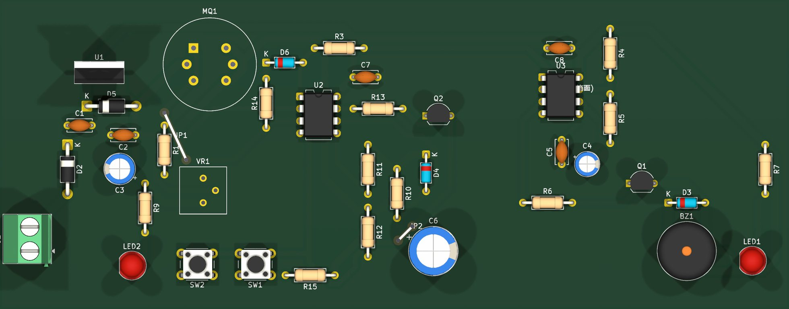

點板子上的零件看規格和方向。板子左邊是電源輸入，右邊是警報輸出。
| 零件 | 怎麼認 | 這塊板子 |
|---|---|---|
| 二極體 | 有環的一端是 K（負極） | D5、D6、D3 環朝左；D2、D4 環朝板子上緣 |
| 電解電容 | 長腳是 +，白色條紋是 − | C3 的 + 在右；C4、C6 的 + 在左 |
| LED | 短腳、外殼平邊是 K | 兩顆 LED 的 K 都插左邊方形焊盤 |
| IC | 缺口或圓點那端是第 1 腳 | U2、U3 缺口都朝板子上緣 |
| PN2222A | 平面對自己，腳從左到右 E、B、C | Q1、Q2 平面都朝板子下緣 |
| 7805 | 印字面對自己，腳從左到右 IN、GND、OUT | 金屬片朝板子上緣 |
| 蜂鳴器 | 標 + 的是長腳 | BZ1 的 + 在左 |
J1 接 12V 電源板的輸出端子：
| J1 上 | +12V（經 D2 反接保護） |
| J1 下 | GND |
接反時 D2 會擋住，板子不會壞，但也不會動作。通電後綠色 LED2 會亮。開機約 171 秒內不會警報，這是讓 MQ-2 預熱的開機延遲。